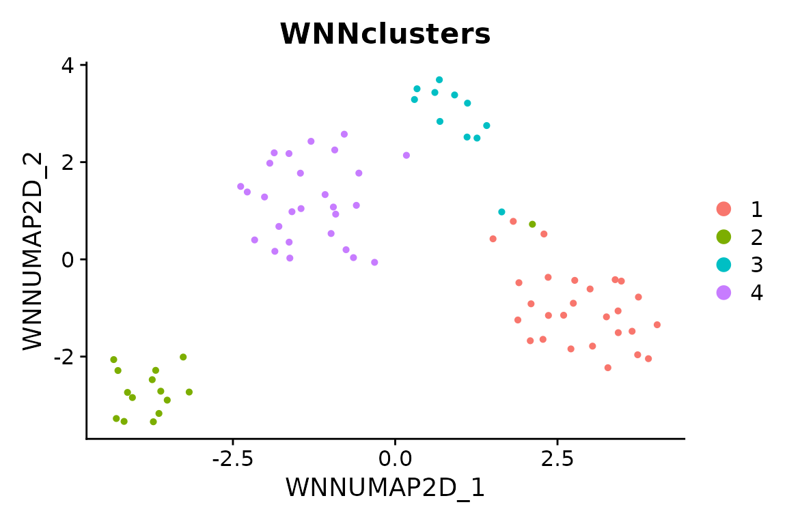

Paired RNA and ATAC with WNN
Source:vignettes/atac-paired-wnn-workflow.Rmd
atac-paired-wnn-workflow.RmdScope
This small example executes weighted nearest-neighbor analysis on 80
paired cells from the packaged pbmcmultiome_sub object. It
needs no downloaded fragments, reference sequence or Python environment.
The subset and small feature/dimension settings illustrate the
interface; they are not recommended parameters for a complete biological
analysis.
For your own paired 10x ARC data, import with
scop::ReadMultiomeData("filtered_feature_bc_matrix.h5", genome = "hg38"),
then pass the returned object to the same WNN call below. Use the
verified genome for your data. Both selected assays must contain the
same paired cells; WNN reports incomplete pairing before preprocessing
instead of silently intersecting or imputing cells.
WNN combines RNA and ATAC neighborhoods. It does not correct sample
batch effects. Supplying batch emits a warning rather than
silently implying that correction occurred. Review batch effects
separately before interpreting joint clusters. See WNN_integrate() for the
method contract.
Run paired preprocessing and WNN
data("pbmcmultiome_sub", package = "scop")
paired <- subset(pbmcmultiome_sub, cells = colnames(pbmcmultiome_sub)[1:80])
#> Loading required namespace: SeuratObject
#> Loading required namespace: Signac
paired <- scop::WNN_integrate(
srt_merge = paired, assay = c("RNA", "peaks"),
linear_reduction_dims = 10, linear_reduction_dims_use = 2:8,
nHVF = 100, neighbor_k = 10, nonlinear_reduction_dims = 2,
verbose = FALSE
)
#> ℹ [2026-11-02 15:35:03] Skip `log1p()` because `layer = data` is not "counts"
#> ℹ [2026-11-02 15:35:06] Skip `log1p()` because `layer = data` is not "counts"
#> ℹ [2026-11-02 15:35:09] Reorder clusters...
#> ℹ [2026-11-02 15:35:09] Skip `log1p()` because `layer = data` is not "counts"
#> Warning: Key 'RNApcaUMAP2D_' taken, using 'rnaumap2d_' instead
#> Warning: Key 'ATACsvdUMAP2D_' taken, using 'atacumap2d_' instead
SeuratObject::Reductions(paired)
#> [1] "RNApca" "RNApcaUMAP2D" "RNAUMAP2D" "ATACsvd"
#> [5] "ATACsvdUMAP2D" "ATACUMAP2D" "ATAClsi" "WNNUMAP2D"Explicit assay selection keeps derived chromvar and
ACTIVITY assays out of the RNA input. Custom RNA assay
names must be supplied explicitly. Gene activity is an
accessibility-derived proxy, and chromVAR measures motif-related
accessibility deviations; neither is measured RNA.
Inspect reusable outputs
Both the default append mode and append = FALSE retain
the RNA PCA, ATAC LSI, complete processed assays (including scaled RNA),
WNN graphs, modality weights and clustering results. The RNA assay is
active on return. The reduction receipt records the actual cells, peaks
and selected dimensions at calculation time.
paired@misc$WNN_reduction_list
#> [1] "RNApca" "ATAClsi"
paired@misc$WNN_dims_list
#> $rna
#> [1] 2 3 4 5 6 7 8
#>
#> $atac
#> [1] 2 3 4 5 6 7 8
stopifnot(all(paired@misc$WNN_reduction_list %in% SeuratObject::Reductions(paired)))
head(paired[[]][, c("RNA.weight", "ATAC.weight", "WNNclusters")])
#> RNA.weight ATAC.weight WNNclusters
#> AAAGCCCGTGTTGCTT-1 0.5756016 0.4243984 2
#> AAAGCTTGTTAGAGGG-1 0.7922759 0.2077241 1
#> AAAGGCTCAATGCCCG-1 0.5354935 0.4645065 2
#> AAATGGCCAAGGTACG-1 0.5100399 0.4899601 4
#> AACAGGATCGTTAGCG-1 0.5961708 0.4038292 4
#> AACCGGCTCAGGCCTA-1 0.4708434 0.5291566 4
SeuratObject::Misc(paired[["ATAClsi"]], "scop_atac_representation")$dimensions
#> [1] 2 3 4 5 6 7 8
stopifnot(nrow(SeuratObject::LayerData(paired, assay = "RNA", layer = "scale.data")) > 0)
Seurat::DimPlot(paired, reduction = "WNNUMAP2D", group.by = "WNNclusters")
For the common dispatcher, use
RunIntegration(srt_merge = paired, batch = NULL, integration_methods = "WNN", assay = c("RNA", "peaks"), ...)
with the same analysis parameters. Native counts remain available for a
subsequent RunLinkPeaks()
analysis, which additionally requires compatible gene coordinates and
verified sequence statistics. WNN clusters and peak-gene associations do
not by themselves establish causal regulation.
Use normalization_method = "SCT" to normalize RNA with
SCTransform; ATAC continues to use TF-IDF and LSI. An explicit
HVF vector selects RNA features only. Set
nonlinear_reduction = character() for graphs and clusters
without an embedding. WNN supports UMAP and force-directed embeddings;
unsupported methods are reported before analysis instead of being
replaced silently.